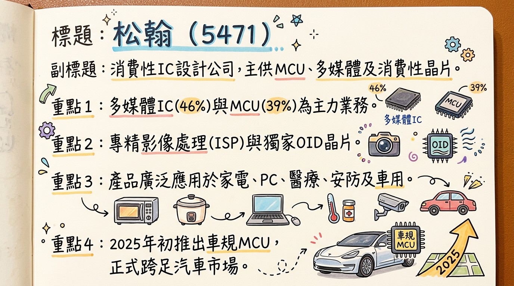
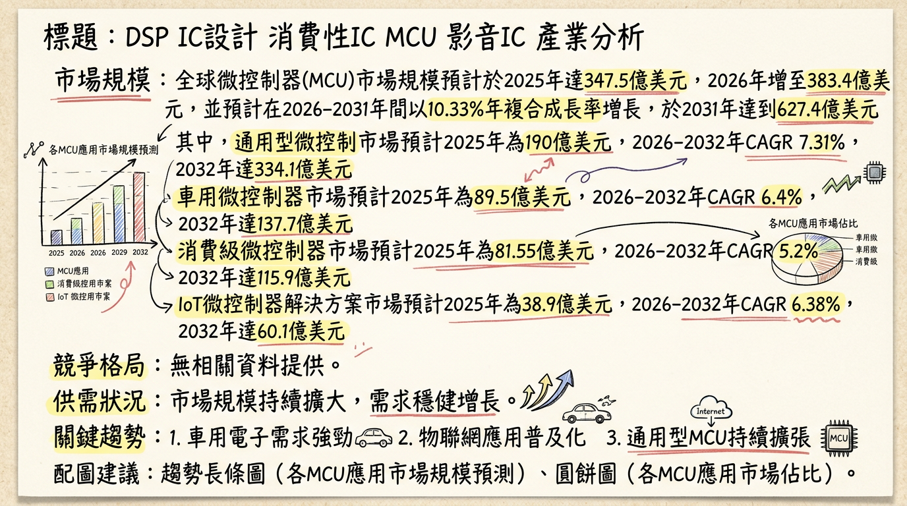
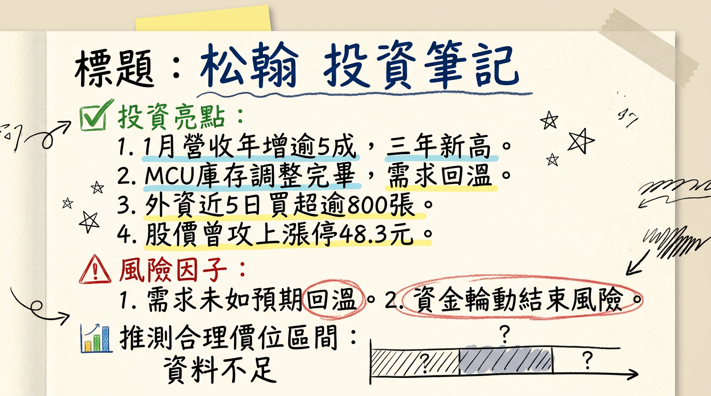

松翰 (5471) 受惠於微控制器 (MCU) 產業庫存去化告一段落、中國廠商率先漲價的趨勢，以及積極佈局車用、個人醫療保健、電競與 AIoT 等利基型市場，2026 年 1 月營收創三年新高，營運已現谷底翻揚訊號；公司持續優化產品組合，有助於推升長期毛利率及獲利能力，評價可望獲得修復。
松翰科技 (5471) 是一家消費性 IC 設計公司，主要提供微控制器 (MCU)、多媒體 IC 及消費性 IC 等產品。
松翰採無廠 (Fabless) 模式運營，專注於晶片設計、研發與銷售，無自有製造基地。
營收結構 (2025 年上半年)| 產品線 | 營收比重 (%) |
|---|---|
| 多媒體 IC | 46 |
| 微控制器 (MCU) | 39 |
| 消費性 IC | 14 |
| 月份 | 金額 | 月增率 MoM (%) | 年增率 YoY (%) |
|---|---|---|---|
| 2026/01 | 2.69 | 9.62 | 56.50 |
| 2025/12 | 2.45 | 9.69 | -5.49 |
| 2025/11 | 2.23 | 1.71 | -6.87 |
| 2025/10 | 2.20 | 7.48 | 1.06 |
| 2025/09 | 2.04 | -9.56 | -7.69 |
| 2025/08 | 2.26 | -1.43 | -4.06 |
| 季度 | 季營收 | 季增率 QoQ (%) | 年增率 YoY (%) | 毛利率 (%) | 營業利益率 (%) | EPS |
|---|---|---|---|---|---|---|
| 2025 Q3 | 6.5959 | -7.36 | -4.60 | 39.65 | 1.81 | 0.24 |
| 2025 Q2 | 7.12 | 16.00 | -2.00 | 43.00 | 9.02 | 0.03 |
| 2025 Q1 | 6.14 | - | - | 41.50 | 3.02 | 0.23 |
| 年度 | 全年營收 | EPS |
|---|---|---|
| 2024 | 27.44 | 1.07 |
| 2025 | 26.76 | 0.72 |
松翰科技於 2025 年 11 月 24 日參加元大證券線上法人說明會，並於 2025 年 8 月 21 日參加國泰證券法人座談會，重點歸納如下：
目前僅找到一份相對較舊的券商報告，2025-2026 年的最新券商目標價及 EPS 預估尚未更新。
券商目標價| 券商名稱 | 目標價 (元) | 評等 | 日期 | 備註 |
|---|---|---|---|---|
| 宏遠證券 | 60 | (未給定) | 2024年5月17日 | 報告發布已逾一年，且預估 2024 年 EPS (2.25 元) 與實際 (1.07 元) 差異大，參考性較低。 |
| 季度 | 毛利率 (%) | 營業利益率 (%) | 稅後淨利率 (%) |
|---|---|---|---|
| 2025 Q3 | 39.65 | 1.81 | 6.18 |
| 2025 Q2 | 43.08 | 9.02 | 0.79 |
| 2025 Q1 | 41.50 | 3.02 | 6.18 |
| 2024 Q4 | 41.18 | 1.37 | 4.87 |
| 2024 Q3 | 40.62 | 2.18 | 3.34 |
| 2024 Q2 | 42.21 | 4.94 | 10.17 |
| 2024 Q1 | 42.50 | 4.05 | 7.76 |
松翰在 2025 年上半年展現出色的庫存管理能力，存貨金額從 7.22 億元降至 6.71 億元，存貨週轉天數也從去年同期的 188 天顯著下降至 164 天。這顯示公司有效去化了過剩庫存，為未來的訂單回補和營收增長奠定了良好基礎。目前 MCU 產業整體庫存水位偏低，預計需求將在 2025 年 Q2 開始回溫。
目前搜尋結果未明確提供松翰近 3 年的具體資本支出金額與趨勢。然而，2024 年營業利益下滑的部分原因為公司投入新產品開發與市場拓展，導致研發費用支出較多，這可以視為對未來成長的策略性投資。
2025 年 Q2 的稅後淨利銳減至 0.03 元，主要受到高達 -12% 的業外損失影響。然而，Q3 業外收支已回歸正向 (佔營收 5.86%)，顯示匯兌損失等業外因素已趨緩。
* 2025 年除息：每股配發現金股利新台幣 1.0 元。除息交易日為 7 月 16 日，股利發放日為 8 月 8 日。
* 2024 年：現金股利 2.4 元。
| 細分市場 | 2025 年市場規模 | 2026 年市場規模 | 2026-2031/32 年 CAGR (%) | 2031/32 年市場規模 |
|---|---|---|---|---|
| 全球 MCU | 347.5 | 383.4 | 10.33 | 627.4 |
| 通用型 MCU | 190 | - | 7.31 | 334.1 |
| 消費級 MCU | 81.55 | - | 5.2 | 115.9 |
| 車用 MCU | 89.5 | 94.98 | 6.4 | 137.7 |
| IoT MCU 解決方案 | 38.9 | 40.7 | 6.38 | 60.1 |
| 細分市場 | 2024 年市場規模 | 2025 年市場規模 | 2025-2031 年 CAGR (%) | 2031 年市場規模 |
|---|---|---|---|---|
| 獨立型 ISP | 6.89 | - | 5.8 | 10.22 |
| 全球 ISP | - | 86 | - | - |
| 細分市場 | 2025 年市場估值 | 2026-2034 年 CAGR (%) | 2034 年市場規模 |
|---|---|---|---|
| 全球玩具 | 1210 | 5.98 | 2075 |
全球 MCU 市場高度集中，意法半導體 (STMicroelectronics)、微芯科技 (Microchip)、恩智浦 (NXP)、瑞薩電子 (Renesas)、英飛凌 (Infineon) 及德州儀器 (TI) 等前六大供應商，共佔據全球超過 80% 的市場份額。這些巨頭主要專注於汽車、工業與醫療等高階、高利潤的應用領域。
全球前 5 大 ISP 晶片供應商市佔率2025 年全球前五大供應商的市佔率合計達到 71%。
松翰 (5471) vs 主要競爭對手的具體比較| 比較項目 | 松翰 (5471) | 國際大廠 (NXP, Renesas 等) | 台灣同業 (新唐、盛群) | 中國廠商 |
|---|---|---|---|---|
| 產品定位 | 多元化，利基型 MCU (醫療、電競)、PC 周邊、多媒體 ISP (NB、安防)、消費性 IC (玩具、OID) | 高階 MCU (車用、工控、醫療)、廣泛類比半導體 | 車用、工控為主，部分通用型 MCU | 中低階通用型 MCU 為主 |
| 技術方向 | 8 位元車規 MCU、AIoT 整合、HPD 與 AI 影像技術 | 先進製程、多核心、功能安全、高運算力 | 32 位元 MCU、車規驗證、智慧座艙方案 | 成本效益、快速上市 |
| 競爭策略 | 差異化競爭、鎖定品牌客戶、深耕特定應用、跨足車用利基市場 | 技術領導、生態系建立、標準制定 | 聚焦高價值車用/工控、技術升級 | 低價競爭、快速複製、搶佔市場份額 |
| 優勢 | OID 獨家專利、醫療 MCU 穩定、新切入車用市場 | 技術壁壘高、客戶基礎穩固、完整解決方案 | 產品線廣泛、部分車用/工控客戶基礎 | 價格競爭力、本土供應鏈優勢 |
| 挑戰 | 8 位元車規 MCU 競爭、32 位元 MCU 布局、國際大廠與中國廠商雙重競爭 | 研發投入高、市場競爭激烈 | 市場規模與技術深度較國際大廠仍有差距 | 產品同質化、毛利率壓力 |
| 公司／代號 | 主要業務 | 2024年全年營收 (億元新台幣) | 2024年EPS (元新台幣) | 2025年Q3營收 (億元新台幣) | 2025年Q3年增率 (%) | 最新毛利率 (%) |
|---|---|---|---|---|---|---|
| 松翰 (5471) | 半導體IC/MCU設計與封裝 | 27.44 | 1.07 | 6.5959 | -4.60 | 39.65 (2025 Q3) |
| 盛群 (6202) | MCU為主，打入Hyundai車用供應鏈 | 30.08 | 1.40 | 7.39 | -2.25 | 38.7 (2025 Q2) |
| 新唐 (4919) | 車用與工控為主，電腦應用、通訊與消費性應用 | 425.21 | 1.13 | 104.97 | -11.97 | 38.9 (2025 Q3) |
| 義隆 (2458) | 嵌入式MCU/動態控制IC、AI應用等 | 126.96 | 9.16 | 31.95 | 2.37 | 44.9 (2025 Q3) |
| 凌陽 (2401) | MCU/AI智慧語音晶片 | 64.34 | 0.44 | 17.55 | -2.33 | 39.8 (2025 Q3) |
| 偉詮電 (2436) | MCU周邊、伺服器與遊戲機用IC設計 | 30.95 | 1.57 | 8.97 | 8.48 | 36.3 (2025 Q3) |
* 趨勢：2030 年連接的 IoT 終端預計將超過 200 億個，推動 MCU 需具備多協議無線、高效處理器、低功耗、高連接性及安全性。
* 影響：促使 MCU 供應商開發更低功耗、高整合度且具備硬體安全功能的產品，滿足智慧家庭、穿戴裝置、工業自動化等 IoT 應用。
* 趨勢：電動車半導體含量大幅增加，單輛車可搭載多達 3000 個半導體元件，MCU 佔比相較燃油車高四倍。ADAS 發展推動車用 ISP 晶片需求，軟體定義汽車 (SDV) 促使車輛架構集中化。
* 影響：對車規級 MCU 需求持續成長，特別在功能安全、高運算能力和即時處理方面。ISP 晶片在 ADAS 和 DMS 中的重要性日益提升，要求更高性能和可靠性。
* 趨勢：邊緣 AI 晶片市場成長顯著，預計 2026 年規模將達到 44.4 億美元，年複合成長率高達 21%。AI-ISP 融合架構成為主流，提升動態範圍和低光照處理能力。
* 影響：推動 MCU 和 ISP 晶片整合 AI 加速功能，實現裝置端的即時分析和決策，應用於智慧醫療、智慧影像監控、智慧家電等，提升產品智能化水準。
* 個人醫療保健與 IoT 應用深化：深耕個人醫療保健 MCU 領域，隨著 IoT 技術與健康意識提升，SOC MCU 產品線有望持續受惠。
* 多媒體 IC 的 AI 整合：松翰的 ISP 晶片若能有效整合邊緣 AI 功能 (如 HPD)，將提升其在智慧影像處理市場的競爭力，抓住邊緣 AI 晶片市場 21% 的年複合成長率。
* 技術升級的挑戰：32 位元 MCU 逐漸成為高階應用主流，SoC 晶片整合 ISP 功能，可能對松翰以 8 位元 MCU 和獨立 ISP 晶片為主的產品線構成技術升級壓力。
* 供應鏈不確定性：全球半導體供應鏈波動、晶圓廠產能利用率及報價調整，可能影響成本和出貨穩定性。
* AI 智慧眼鏡：間接受益於 AI 智慧眼鏡對低功耗運算晶片和感測器/鏡頭模組的需求。
| 時間 | 成長動能 | 具體內容 |
|---|---|---|
| 2025 年初 | 新市場拓展：車用 MCU | 松翰推出首款符合車規的 8 位元 MCU—SNA8F5762JG 系列，通過 AEC-Q100 Grade 1 認證，可應用於電動座椅、車燈、雨刷控制等車載場景，正式跨足汽車應用市場。 |
| 2025 年 H1 | 庫存去化與營運效率改善 | 存貨週轉天數從去年同期的 188 天降至 164 天；存貨金額從 7.22 億元降至 6.71 億元。 |
| 2025 年 1-9 月 | 產品組合優化與高價值市場聚焦 | SOC MCU (醫療量測應用) 比重穩定增長至 30%；USB MCU (電腦周邊、電競、USB Type C PD) 比重增長至 31%；非筆電影像視訊晶片比重從 2023 年的 21% 大幅增長至 39%，顯示轉型至 AIOT、安防、無人機等新興市場成功。消費性 IC 比重從 2023 年 12% 上升至 15%。 |
| 2025 年 Q3 | 獲利能力強勁反彈 | 稅前淨利與本期淨利同比大幅增長 77%；EPS 從 Q2 的 0.03 元回升至 0.24 元。 |
| 2026 年初 | MCU 產業回溫與價格機制改善 | MCU 庫存調整告一段落，市場預期需求回溫。中國 MCU 廠商率先宣布漲價 15% 至 50%，緩解過去低價競爭對台廠傷害。 |
| 2026 年 1 月 | 營收表現強勁，營運拐點確立 | 月營收達新台幣 2.69 億元，月增 9.62%，年增 56.5%，創三年來新高。 |
| 持續進行中 / 未來 | 新客戶/新市場拓展與技術升級 | 持續在電競周邊及個人醫療保健等利基型 MCU 市場推出新產品，專注品牌客戶。多媒體影像晶片積極投入 HPD 與 AI 相關技術，拓展安防、門禁等新應用。AIoT、無人機等具成長潛力市場的應用深化。USB Type-C 充電器 IC 鎖定品牌客戶。 |
| 長期潛力 | AI 發展帶動 MCU 需求與產品線深化 | 隨著 AI 從雲端發展到地端，具備邊緣運算能力的 MCU 需求將增加。OID 晶片組在兒童光學點讀筆市場有穩固客戶基礎，持續貢獻穩定營收。 |
| 未明確資訊 | 擴廠計畫、資本支出增加、新產能上線時程 | 目前未有明確的 2026 年擴廠計畫、新廠地點、投資金額、預計完工/量產時間、資本支出增加的具體原因及預計帶來的產能增幅。 |
松翰 (5471) 經歷產業逆風與庫存調整後，其營運已於 2026 年初展現明確的轉機訊號。我們認為松翰具有以下投資價值：
綜合考量松翰的營運轉折、產品結構優化及在多個高成長市場的佈局，儘管 2026 年具體 EPS 預估尚未明朗，但假設其營運復甦態勢持續，2026 年 EPS 有望超越 2025 年的 0.72 元，並逐步回到 2.0-2.5 元的水平。給予其恢復期較高的本益比區間，建議投資人可關注松翰在 50 元至 65 元 區間的投資機會。
本報告由 AI 自動產生，資料來源為公開網路資訊，僅供參考，不構成投資建議。產生時間：2026-03-06 12:59


